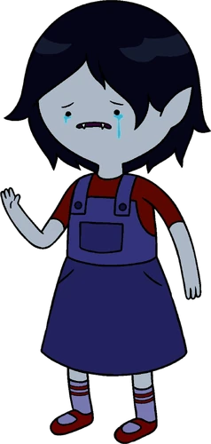
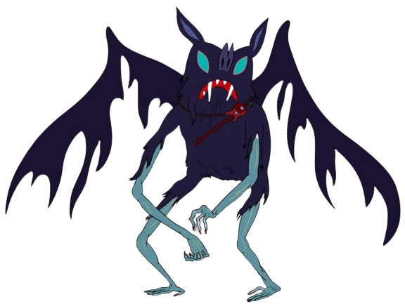
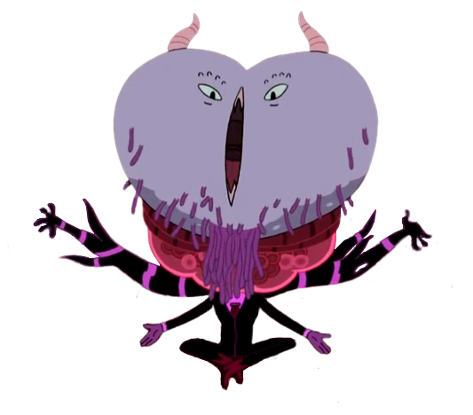
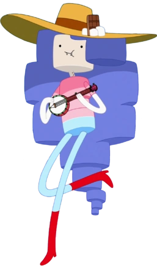

Marceline Abadeer (full title: Marceline the Vampire Queen) is one of the main characters in Adventure Time and the main protagonist of the miniseries Stakes. Marceline is a fun-loving and playful 1,000-year-old vampire queen. Unlike a traditional vampire, Marceline does not need to drink blood to survive; rather, she consumes the color red, or other similar tints. Marceline is also an avid musician who plays an electric bass guitar, which she crafted from her family's heirloom battle-axe.
Marceline is a half-human/half-demon, turned into a half-vampire/half-demon after killing the previous vampire king many years prior to the start of the show, which made her the eponymous Vampire Queen. Although she is 1,000 years old, she takes on the physical appearance of a teenager. Unlike traditional Western vampires, Marceline subsists not off blood, but rather the color red (including "low-grade" shades such as pink). Since she is only sated by the color itself, blood is appealing simply due to its hue (although Ward noted on his Formspring that she "drinks blood sometimes"). When Marceline is deprived of red, she enters into a "feral" state, and will instinctively try to kill others and drink their blood. Like traditional Western vampires, she is vulnerable to sunlight and is capable of turning into a bat of varying size.
Having spent centuries traversing the Land of Ooo, she has evolved into a "fearless daredevil", and her fondness for mischief has turned her into something of a trickster. It is implied that some of her more malevolent traits are solely based on her vampire instincts. She can also be sentimental. She was very emotionally attached to her teddy bear Hambo. Marceline seems to be very emotional. She is also very independent. It is easier for Marceline to express her feelings through music, but has trouble expressing them otherwise. She keeps a diary that she uses for inspiration for songs. Her personality has changed slightly. Marceline has learned how to be more mature, which is proven by her accepting her immortality. She has also learned how to be more empathetic to others too. However, it is still unknown if she got over her emptiness in the end. Overall, Marceline has grown to be a much more emotionally mature person, while still retaining her playfulness.
| Name | Type | Image | Age | Species | Occupation |
|---|---|---|---|---|---|
| Marceline, Mar-Mar, Marce, Marshy | Normal | 1000 years old | Vampire/Demon Hybrid | Vampire Queen, Musician, Heir to Nightosphere | |
| Marceline, Mar-Mar, Marce, Marshy | Child |  | 1000 years old | Vampire/Demon Hybrid | Vampire Queen, Musician, Heir to Nightosphere |
| Marceline | Bat |  | 1000 years old | Vampire/Demon Hybrid | Vampire Queen, Musician, Heir to Nightosphere |
| Marceline The Vampire Queen | Queen |  | 1000 years old | Vampire/Demon Hybrid | Vampire Queen, Musician, Heir to Nightosphere |
| Marshmaline the Campfire Queen | Candy Elemental |  | 1000 years old | Vampire/Demon Hybrid | Vampire Queen, Musician, Heir to Nightosphere |
Marceline has light blue-gray skin, crooked fangs, and long, midnight black hair that reaches to her feet. She also sports two marks on her neck, which are the marks of the bite that turned her into a vampire. Her tongue is sometimes bifurcated, like a snake's, but other times looks like a normal human's. This may stem from her shapeshifting powers, allowing her to change its appearance as she pleases. Marceline's general appearance, particularly her blue-gray skin, fangs, and pointy ears, is an apparent result of her demonic heritage, and she shares all of these characteristics with her father. From Marceline's maternal side, she possesses genes from a dark-skinned race which she inherited from her mother, although evidently, the phenotype associated with these genes are recessive. Her main outfit features a dark gray tank top, dark blue pants, and red boots.
Marceline is immortal and unaging as a vampire. Meaning, as long as she isn't killed, she could live forever. From her demonic father, Marceline inherited the power to absorb people's souls and minor control over fire. After absorbing the essence of several powerful vampires, Marceline gained several supernatural powers. From The Fool she gained the power to fly; from The Empress the ability to turn invisible; from The Hierophant she gained the power to shape-shift; and from The Moon, the ability to rapidly heal. She can move things using her mind. Marceline can raise the undead to serve her. She can fire red energy beams from her arms that are able to restrain people. As a result of absorbing the Vampire King's dark cloud half, she can now communicate with a miniature mental projection of him. She is ambidextrous, which explains her ability to play bass with both hands. Marceline is a very talented musician and songwriter, and is proficient at singing and playing her basses. When wearing the Nightosphere Amulet, she gains the ability to shoot green lasers which either vaporize or transform whatever they hit. They can also create or transform into a large cloud of blood mist. Marceline is capable of consuming the color red from an object she bites, while the object itself remains physically unharmed.
Typical vampiric weaknesses. It is worth noting that while vulnerable to sunlight, as is common in vampire lore, she does not dissolve right away. The nuance to this in the Adventure Time world is that vampires are vulnerable specifically to direct sunlight. Marceline is capable of unrestricted movement on a bright sunny day provided that she shields herself sufficiently, which she usually accomplishes with a combination of a parasol and a large sunhat, sometimes with the addition of full-length gloves to cover her arms. According to Marceline, moving around on a bright day still hurts mildly, comparable to scraping her knee, but she can bear it. Like typical vampires, Marceline cannot see her own reflection in a mirror. She has revealed that she cannot digest syrup. Whenever she doesn't consume enough red-colored objects, Marceline goes into "feral mode", a state in which she becomes ravenous out of hunger. This rabid state subsides once Marceline consumes a sufficient amount of red.
"I eat shades of red."
"I'm not mean. I'm a thousand years old, and I just lost track of my moral code."
"I just want my dad to notice me."
"I'm hurting you because I love you."
"You... ate all... MY RED!"
"I'm gonna go into feral mode. [sighs] It's not gonna be pretty."